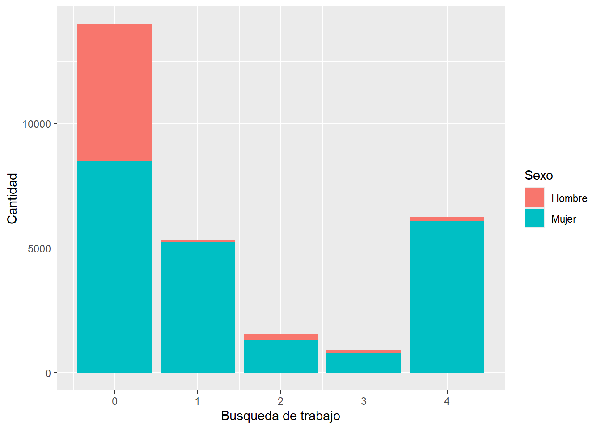
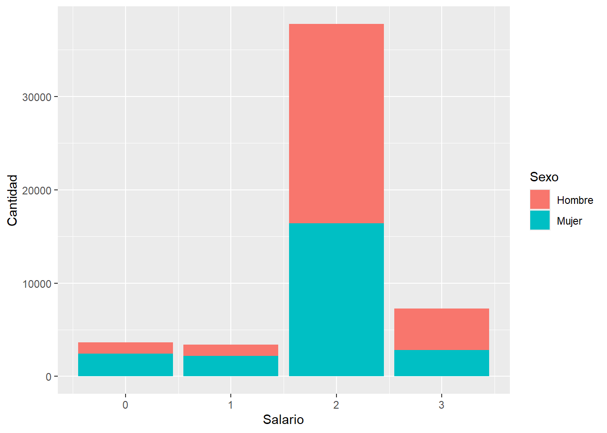

pacman::p_load(sjlabelled,
dplyr, #Manipulacion de datos
stargazer, #Tablas
sjmisc, # Tablas
summarytools, # Tablas
kableExtra, #Tablas
sjPlot, #Tablas y gráficos
corrplot, # Correlaciones
sessioninfo, # Información de la sesión de trabajo
ggplot2) # Para la mayoría de los gráficosTrabajo
Por: Francisca Apablaza
Inequidad de género en el mercado laboral
Introducción
En el presente trabajo abordare la inequidad de género específicamente en el mercado laboral. Analizando que elementos podrían afectar en el desarrollo desigual entre hombres y mujeres dentro del mercado laboral. El principal tema que surge cuando hablamos de una desigualdad de género en el trabajo, es la brecha salarial. Sin embargo, quisiera adentrarme en las relaciones que existen dentro de esta esfera y que podrían afectar como cada persona experimenta el mercado laboral.
Existen diversos estudios sobre la inequidad de género y aun así los estudios sobre la mujer integrada en el sistema laboral siguen siendo uno de los más relevantes, (De Fanelli 1989). Quisiera detenerme en dos puntos para explicar la relevancia del tema. El primer punto es sobre la importancia de la esfera económica para la subsistencia del individuo, ya que parece algo obvio pero el salario que obtenemos de nuestro trabajo es lo que nos permite desarrollarnos en otros ámbitos, sin embargo y esto es parte de lo que analizare, este salario es diferente entre hombres y mujeres por el mismo trabajo realizado. Y esto es un problema, (ver Nieto 2016).
El segundo punto es sobre las formas de relación que existen en el mercado laboral y que implicancias trae para las mujeres, ¿optamos a los mismos puestos que los hombres?, ¿cuántas horas le dedicamos al trabajo?, ¿cuántas mujeres están integradas en el mercado laboral? (De Lattes and Wainerman 1977). Y más preguntas que podemos realizarnos, para dilucidar como es la relación de las mujeres dentro del mercado laboral a diferencia de los hombres. En otras palabras, que valor tiene la mujer para el mercado laboral.
Pero antes qué es el mercado laboral, en este estudio me referiré a las ofertas laborales específicamente del trabajo asalariado, no con intención de invisibilizar las otras manifestaciones de trabajo, si no para poder acotar y contextualizar el problema de estudio que ya de por si cuenta con varias aristas. Entonces esta incorporación de la mujer al mundo laboral debió haber sido un momento revolucionario de autonomía para cada mujer, sin embargo, no todo puede ser color de rosas, y dejo en evidencia una problemática sistemática de una sociedad patriarcal, que existe un sesgo de género, en la retribución como en las interacciones en el mercado laboral, he aquí la relevancia de estudiar este tema, (ver Abramo 2004).
Si nos ponemos a analizar el mercado laboral no tardamos en darnos cuenta que es un mercado desigual, y esto a simple vista no tiene porque ser un problema, ya que no todos podemos ofrecer la misma fuerza de trabajo, y no todo trabajo es retribuido de la misma forma, el conflicto en todo esto esta cuando empezamos a observar que gran parte de esta desigualdad viene por una desigualdad de clase, educación, y también género, (ver Consuelo Iranzo et al. 2009). Es por esto que debemos analizar la inequidad de genero en el mercado laboral desde una perspectiva interseccional, tomando en cuenta algunos elementos que pueden afectar esta inequidad, factores como educación, si la persona esta casada o si tiene hijos.
Con todo lo mencionado la hipótesis centras de este trabajo es que existe un sesgo de género que afecta de manera negativa a las mujeres en el mercado laboral, desde su inserción, su desempeño a nivel social y su retribución económica. Me centrare en 3 ejes fundamentales que ya hemos estado haciendo un acercamiento.
El primero punto es sobre la brecha laboral de género, es decir si realmente hay mas hombres que mujeres en el mercado laboral, debido a que la mujer realiza mas trabajos informales que los hombres, como el trabajo doméstico no remunerado, deberíamos ver una diferencia en la participación de ambos actores en el trabajo asalariado, (ver Nieto 2016).
El segundo punto que analizare, es el rol que cumple la familia, es decir mujeres casadas y con hijos en comparación a hombres. Este punto me interesa abordarlo debido a lo que mencione anteriormente, ya que la mujer se ve enfrentadas a otras tareas que puede diferenciarla al momento de integrarse al mercado laboral (ver De Fanelli 1989).
Y por último, analizare la brecha salarial, si existe diferencia en los ingresos de hombres y mujeres, ver (Nieto 2016). Por la naturaleza de la base de datos a analizar puede que se manifieste en el ingreso por hogar y la configuración de esos hogares es decir cuando la mujer es jefe de hogar a deferencia de cuando lo es un hombre o si hay algun otro elemento que influya en el salario.
Me interesa centrarme en estas 3 aristas para poder realizar un radiografía que me permita abarcar la mayor cantidad de aspectos sobre la inequidad de genero en el mercado laboral.
Metodología
En el presente trabajo para lograr realizar un análisis estadístico de las “inequidades de genero en el mercado laboral” estaré trabajando con la base de dados de la Encuesta de Caracterización Socioeconómica Nacional, desde ahora (CASEN), la cual es una encuesta hacia los hogares realizado por el Ministerio de Desarrollo Social y Familia.
Trabajare con una serie de variables que me permitan abordar las 3 aristas que propuse anteriormente, ahora bien, como primer filtro estaré trabajando la base de datos entre los rangos etarios desde los 25 hasta los 65años, ya que es la principal población activa, en el mercado laboral, se que en la practica esto difiere, sin embargo, por efectos prácticos del análisis, y acotar el trabajo, lo realice así.
Por otro lado, el objetivo es ver como se comportan las variables en relación al género, si existe una diferencia significativa y analiza se hombres y mujeres se desarrollan distintos en el mercado laboral. Para esto cada variable será cruzada con la variable de sexo.
Analisis de datos
Cargar paquetes:
Cargar base de datos:
load(url("https://github.com/panchamama/Practico-1/raw/main/1.%20input/CASEN_record.rdata"))dim(proc_base)[1] 107726 10names(proc_base) [1] "edad" "sexo" "jefe_h" "pareja"
[5] "mp_vivienda" "trbj" "trbj_no formal" "busqueda_trbj"
[9] "horas_trbj" "Salario" sjmisc::descr(proc_base,
show = c("label","range", "mean", "sd", "NA.prc", "n"))%>%
kable(.,"markdown")| var | label | n | NA.prc | mean | sd | range | |
|---|---|---|---|---|---|---|---|
| 3 | edad | Edad | 107726 | 0.00000 | 44.724709 | 12.0343154 | 40 (25-65) |
| 8 | sexo | sexo | 107726 | 0.00000 | 1.538190 | 0.4985417 | 1 (1-2) |
| 5 | jefe_h | jefe_h | 107726 | 0.00000 | 1.476858 | 0.4994665 | 1 (1-2) |
| 7 | pareja | pareja | 14767 | 86.29207 | 1.718562 | 0.4497160 | 1 (1-2) |
| 6 | mp_vivienda | mp_vivienda | 31907 | 70.38134 | 1.280033 | 0.4490219 | 1 (1-2) |
| 9 | trbj | trbj | 107726 | 0.00000 | 1.357295 | 0.4792051 | 1 (1-2) |
| 10 | trbj_no formal | trbj_no formal | 38490 | 64.27046 | 1.961704 | 0.1919116 | 1 (1-2) |
| 2 | busqueda_trbj | o7. ¿Cuál es la razón por la que no buscó trabajo en las últimas 4 semanas? | 28027 | 73.98307 | 1.288151 | 1.6142794 | 4 (0-4) |
| 4 | horas_trbj | o10. ¿Cuántas horas trabaja habitualmente por semana en su trabajo principal? | 72739 | 32.47777 | 2.007204 | 1.8347940 | 168 (0-168) |
| 1 | Salario | y1. Mes pasado. Sueldo o salario líquido en su trabajo principal | 52051 | 51.68205 | 1.934641 | 0.6924271 | 3 (0-3) |
En este análisis como mencione me encuentro trabajando con la base de datos CASEN, sin embargo, en esta presentación ya podemos ver la base de datos modificada. Contamos con una cantidad de casos de 107.726. Primero seleccione variables que me permitieran abordar los 3 aspectos de la inequidad de género, que decidí analizar y las etiquete. Obteniendo:
Edad -> edad
sexo -> sexo
pco1_a -> jefe_h
h5_cp -> pareja
h5_10 -> mp_vivienda
o1 -> trbj (Trabajo)
o2 -> tbj_no formal (No trabajo, pero realizo una actividad por salario)
o10 -> horas_trbj (¿Cuántas horas trabaja habitual mente en la semana)
y1 -> salario (Sueldo)
A su vez la base fue filtrada por la variable edad, trabajando solo con las edades entre 25 y 65 años, considerando que es entre entas edades podriamos considerar la poblacion laboralmente activa.
Respecto a lo anterior la hipótesis planteada, afirma que existen inequidades de genero en el mercado laboral y también existen factores que pueden acrecentarlo, como lo es las labores de cuidado, estar casado, y como las mujeres se ven también afectadas con una brecha salarial. (visitar: Arantza Ugidos Olazábal et al. 1995). Ahora bien para poder analizar esto esta realizando cruce entre las variables, principalmetne con el genero, para analizar los resultados, si reflejan alguna inequidad.
Analisis de variables
El primer aspecto al analizar es si efectiva mente en el mercado laboral, encontramos mas la precencia de hombres que de mujeres.
# a) Trabajo la semana pasada
sjt.xtab(proc_base$trbj, proc_base$sexo,
show.col.prc=TRUE,
show.summary=FALSE,
encoding = "UTF-8"
)| trbj | sexo | Total | |
| Hombre | Mujer | ||
| Sí | 38979 78.4 % |
30257 52.2 % |
69236 64.3 % |
| No | 10770 21.6 % |
27720 47.8 % |
38490 35.7 % |
| Total | 49749 100 % |
57977 100 % |
107726 100 % |
Podemos ver como efectivamente la cantidad de hombres que si trabajo 78.4% versus las mujeres 52.2%, tambien lo interesante que por su contra parte, quienes no trabjaron se destaca el porcentaje de mujeres siendo de un 47.8% y los hombres solo un 21.6% no trabajaron. Ahora bien veamos que ocurre con el trabajo no formal.
# b) Realizo trabajo de manera informal
sjt.xtab(proc_base$`trbj_no formal`, proc_base$sexo,
show.col.prc=TRUE,
show.summary=FALSE,
encoding = "UTF-8"
)| `trbj_no formal` | sexo | Total | |
| Hombre | Mujer | ||
| Sí | 621 5.8 % |
853 3.1 % |
1474 3.8 % |
| No | 10149 94.2 % |
26867 96.9 % |
37016 96.2 % |
| Total | 10770 100 % |
27720 100 % |
38490 100 % |
Los resultados nos dicen que muy pocas personas realizaron un trabjo no formal un 3.8%, mientras que un 96.2% no lo realizo, en ambos casos las mujeres tienen mas presencia sin embargo no es una diferencia tan significativa respecto a los hombres. Ahora bien si observamos la cantidad de horas que trabajan hombres y mujeres. Lo que me interesa, es quienes trabajan menos de 8 horas, quienes trabajan 8 horas y quienes trabajan mas de 8 horas., al día.
# c) Cuantas horas trabajo a la semana
sjt.xtab(proc_base$horas_trbj, proc_base$sexo,
show.col.prc=TRUE,
show.summary=FALSE,
encoding = "UTF-8"
)| o10. ¿Cuántas horas trabaja habitualmente por semana en su trabajo principal? |
sexo | Total | |
| Hombre | Mujer | ||
| No_trbj | 2 0 % |
3 0 % |
5 0 % |
| Trbj_me8 | 4724 11.8 % |
7970 24.4 % |
12694 17.5 % |
| Trbj_8 | 27772 69.3 % |
21241 65 % |
49013 67.4 % |
| Trbj_ma8 | 7552 18.8 % |
3452 10.6 % |
11004 15.1 % |
| 90 | 5 0 % |
2 0 % |
7 0 % |
| 91 | 2 0 % |
0 0 % |
2 0 % |
| 92 | 1 0 % |
1 0 % |
2 0 % |
| 96 | 4 0 % |
0 0 % |
4 0 % |
| 98 | 3 0 % |
1 0 % |
4 0 % |
| 105 | 2 0 % |
0 0 % |
2 0 % |
| 120 | 0 0 % |
1 0 % |
1 0 % |
| 168 | 1 0 % |
0 0 % |
1 0 % |
| Total | 40068 100 % |
32671 100 % |
72739 100 % |
Lo primero que podemos ver es que la mayoría de los datos estan concentrados en la opción de “Trbj_8”, es decir que la mayoria de las personas trabajan 8 horas, siendo los hombres por una diferencia del 4.3% más que las mujeres. Hay mas mujeres que trabajan menos de las 8 horas, vs los hombres que son quienes trabajan mas de 8 horas.
Ahora bien como podemos explicar estas diferencias a la hora de participar en el mercado laboral, bueno siguiendo el hilo conductor de mi hipotesis, debemos analizar que rol cumple las relaciones en el hogar en esta participacion.
# d) Jefe de hogar
sjt.xtab(proc_base$jefe_h, proc_base$sexo,
show.col.prc=TRUE,
show.summary=FALSE,
encoding = "UTF-8"
)| jefe_h | sexo | Total | |
| Hombre | Mujer | ||
| Sí | 25041 50.3 % |
31315 54 % |
56356 52.3 % |
| No | 24708 49.7 % |
26662 46 % |
51370 47.7 % |
| Total | 49749 100 % |
57977 100 % |
107726 100 % |
Podemos ver que hay mas mujeres jafas de hogar que los hombres sin embargo, la diferencia es de un 4%, lo cual no es mucho, asu vez cuando vemos la columna de las mujeres, notamos que las mujeres que son jefas de hogar son mas que las que no, siendo una diferencia de 8%, mientras que la diferencia entre los hombres que son y no son jefes de hogar es de un 0,6%.
Ahora quiero ver que ocurre cuando hay parejas que conforman el hogar y como repercute en el salario
# e) Conformacion de parejas dentro del hogar
sjt.xtab(proc_base$pareja, proc_base$Salario,
show.col.prc=TRUE,
show.summary=FALSE,
encoding = "UTF-8"
)| pareja | y1. Mes pasado. Sueldo o salario líquido en su trabajo principal |
Total | |||
| Sin sueldo | Sueldo inf | Sueldo pro | Sueldo sup | ||
| Sí | 131 26.4 % |
117 25.5 % |
1568 29.8 % |
128 24.2 % |
1944 28.8 % |
| No | 366 73.6 % |
341 74.5 % |
3694 70.2 % |
402 75.8 % |
4803 71.2 % |
| Total | 497 100 % |
458 100 % |
5262 100 % |
530 100 % |
6747 100 % |
Lo primero que podemos apreciar es que hay mas personas sin pareja, que con pareja, donde notamos una mayor diferencia es con el parametro de sueldo promedio, donde las personas sin pareja son mucho mayores que los demas datos, ahora esta tabla no nos dice micho. Ahora bien que ocurre con las horas destinadas al trabajo cuando hay una pareja en el hogar.
sjt.xtab(proc_base$pareja, proc_base$horas_trbj,
show.col.prc=TRUE,
show.summary=FALSE,
encoding = "UTF-8"
)| pareja | o10. ¿Cuántas horas trabaja habitualmente por semana en su trabajo principal? |
Total | |||||||||||
| No_trbj | Trbj_me8 | Trbj_8 | Trbj_ma8 | 90 | 91 | 92 | 96 | 98 | 105 | 120 | 168 | ||
| Sí | 0 0 % |
370 24.2 % |
1897 29.3 % |
417 29.2 % |
0 0 % |
1 100 % |
0 0 % |
0 0 % |
0 0 % |
0 0 % |
0 0 % |
0 0 % |
2685 28.5 % |
| No | 1 100 % |
1156 75.8 % |
4580 70.7 % |
1010 70.8 % |
0 0 % |
0 0 % |
0 0 % |
0 0 % |
0 0 % |
0 0 % |
0 0 % |
0 0 % |
6747 71.5 % |
| Total | 1 100 % |
1526 100 % |
6477 100 % |
1427 100 % |
0 100 % |
1 100 % |
0 100 % |
0 100 % |
0 100 % |
0 100 % |
0 100 % |
0 100 % |
9432 100 % |
vemos que cuando se cuenta con la presencia de una pareja se concentran mucho mas en solo trabajar las 45 horas semanales (horio de oficina), sin embargo cuando no se cuenta con una pareja, trabajar menos incluso trabajar mas, son opciones que toman mas fuerza. Esto puede deberse a que la persona deben hacer mas tareas solos en el hogar o a su vez puede que tengan mas tiempo para trabajar mas.
# f) El padre o la madre viven en la vivienda
sjt.xtab(proc_base$mp_vivienda, proc_base$Salario,
show.col.prc=TRUE,
show.summary=FALSE,
encoding = "UTF-8"
)| mp_vivienda | y1. Mes pasado. Sueldo o salario líquido en su trabajo principal |
Total | |||
| Sin sueldo | Sueldo inf | Sueldo pro | Sueldo sup | ||
| Sí | 889 72.3 % |
761 73.1 % |
8504 73.4 % |
740 68.3 % |
10894 72.9 % |
| No | 340 27.7 % |
280 26.9 % |
3088 26.6 % |
344 31.7 % |
4052 27.1 % |
| Total | 1229 100 % |
1041 100 % |
11592 100 % |
1084 100 % |
14946 100 % |
Aquí observamos como influye la presencia de madre o padre en la vivienda, respecto al sueldo promedio vemos que tiene una gran diferencia cuando se encuentra con una madre o un padre en la vivienda, ahora vien tambien notamos que son pocas las viviendas que no cuentan con una madre o un padre en la vivienda.
Hasta ahora las variables sobre el hogar no han sido muy reveladoras al respectos, sin embargo nos queda esta ultima variable respecto a las dinamicas del hogar, veamos que podemos observar.
# g) Razon de la no busqueda de trabjao
sjt.xtab(proc_base$busqueda_trbj, proc_base$sexo,
show.col.prc=TRUE,
show.summary=FALSE,
encoding = "UTF-8"
)| o7. ¿Cuál es la razón por la que no buscó trabajo en las últimas 4 semanas? |
sexo | Total | |
| Hombre | Mujer | ||
| Otra razon | 5507 90.3 % |
8496 38.7 % |
14003 50 % |
| Tiene que cuidar a niños o niñas |
94 1.5 % |
5242 23.9 % |
5336 19 % |
| Tiene que cuidar a algún adulto mayor |
219 3.6 % |
1326 6 % |
1545 5.5 % |
| Tiene que cuidar a otro familiar |
119 2 % |
776 3.5 % |
895 3.2 % |
| Quehaceres del hogar | 159 2.6 % |
6089 27.8 % |
6248 22.3 % |
| Total | 6098 100 % |
21929 100 % |
28027 100 % |
Esta variable nos permite analizar grandes direfencia entre hombres y mujeres, lo primero que vemos es la alta participacion de la mujer en labores de cuidado, esto si corrobora la hipotesis y deja en evidencia una desigualdad con los roles de genero.
Un punto que me parece interesante es la avismal diferencia entre hombres y mujeres con los quehaceres del hogar, 6089 mujeres no han buscado trabajo por dedicarse a los quehaceres del hogar mientra que solo 159 hombres no han podido por esta misma razon.
Esta diferencia demuestra que los hombre tienen menos obstaculos al momento de buscar trabjo, mientras que las mujeres deben preocuparse de otras labores, que le impiden buscar trabajo.
#|label:fig busqueda_de_trabajo
#|fig-cap:"Plot"
graph1 <- proc_base %>% ggplot(aes(x = busqueda_trbj, fill = sexo)) +
geom_bar() +
xlab("Busqueda de trabajo") +
ylab("Cantidad") +
labs(fill="Sexo")+
scale_fill_discrete(labels = c('Hombre','Mujer'))
graph1Warning: Removed 79699 rows containing non-finite outside the scale range
(`stat_count()`).
Por ultimo para analizar la brecha salarial, podemos observar que primero la cantidad de mujeres sin sueldo es de un 10.3%, mientras que los hombres sin sueldo es de 4.2%. Cuando nos fijamos en la categoria de sueldo inferior, vemos que las mujeres son el 9.3% mientras que los hombres son el 4.2%.
en estas dos primeras categorias vemos como son mas mujeres quienes, no reciben sueldo y quienes reciben un sueldo inferior al promedio, ahora bien cuando seguimos avanzando vemos que ahora los hombres son mayoria, sin embargo en la categoría de sueldo promedio que es donde se encuentra el 72.% de los datos. Vemos que son mas hombres con un 75.9% que ganane el sueldo propmedio, mientras que las mujeres son un 68.7%. Y en nuetra ultima categoria de suelfo superior al promedio tenemos tambien que son mas hombres que mujeres los que ganan mas del promedi, donde los hombre son un 15,7% y las mujeres un 11.8%.
Gracias a esta variable podemos confirmar parte de la hipotesis, si vemos que hay una diferencia salarial entre hombres y mujeres, y no solo eso que los hombres tienen una mejor estabilidad economica, al tener mejores sueldos.
# h) Salario
sjt.xtab(proc_base$Salario, proc_base$sexo,
show.col.prc=TRUE,
show.summary=FALSE,
encoding = "UTF-8"
)| y1. Mes pasado. Sueldo o salario líquido en su trabajo principal |
sexo | Total | |
| Hombre | Mujer | ||
| Sin sueldo | 1174 4.2 % |
2457 10.3 % |
3631 7 % |
| Sueldo inf | 1184 4.2 % |
2213 9.3 % |
3397 6.5 % |
| Sueldo pro | 21344 75.9 % |
16422 68.7 % |
37766 72.6 % |
| Sueldo sup | 4430 15.7 % |
2827 11.8 % |
7257 13.9 % |
| Total | 28132 100 % |
23919 100 % |
52051 100 % |
graph2 <- proc_base %>% ggplot(aes(x = Salario, fill = sexo)) +
geom_bar() +
xlab("Salario") +
ylab("Cantidad") +
labs(fill="Sexo")+
scale_fill_discrete(labels = c('Hombre','Mujer'))
graph2Warning: Removed 55675 rows containing non-finite outside the scale range
(`stat_count()`).
Conclusíon
Bueno el recorrido que hicimos al analizar las variables, podemos ver cómo hay ciertos factores que tienen más relevancia que otros, para cumplir la hipótesis. Recordemos que este trabajo tiene por objetivo realizar un análisis estadístico de la “Inequidad de géneros”, para esto comprendí el problema desde 3 aristas.
El primer aspecto que pude corroborar es que efectivamente hay una mayor participación de hombres en el mercado laboral en comparación con las mujeres. Como un segundo aspecto era como afecta las relaciones del hogar, esto nonos entrego muchos resultados, a excepción de cuando analice las razones de porque no han buscado trabajo en el ultimo tiempo y los resultados afirman que las mujeres se hacen cargos de otras tareas en este caso tareas de cuidado y quehaceres del hogar lo cual impide notoriamente la búsqueda de un trabajo, mientras los hombres no se ven muy afectados por esto. Por último, vemos que, si hay efectivamente una brecha salarial, en el mercado laboral, los hombres presentan mejor valoración de su trabajo vs las mujeres.
En resumen, el análisis de las variables nos permite confirmas la hipótesis que, si existe una inequidad laboral, y hay elementos que influyen en ellos, sin embargo, creo que es necesario que se deba ahondar un poco más, para poder corregir y reevaluar cosas que talvez en una primera instancia no se considera.
References
Abramo, Laís. 2004. “Inserción Laboral de Las Mujeres En América Latina: Una Fuerza de Trabajo Secundaria?” Revista Estudos Feministas 12 (2): 224–35. https://doi.org/10.1590/S0104-026X2004000200013.
Arantza Ugidos Olazábal, Arantza Ugidos Olazabal, Sara de la Rica, Arantza Ugidos Olazabal, Sara De la Rica Goiricelaya, Arantza Ugidos, Sara De la Rica Goiricelaya, Sara De la Rica Goiricelaya, and Sara De la Rica Goiricelaya. 1995. “Son Las Diferencias En Capital Humano Determinantes En Las Diferencias Salariales Entre Hombres y Mujeres.” Investigacion Economica 19 (3): 395–414.
Consuelo Iranzo, Consuelo Iranzo, J Richter, and Jacqueline Richter. 2009. “El Espacio Femenino En El Mundo Del Trabajo Formal.” Revista Venezolana De Gerencia 7 (20): 509–35. https://doi.org/10.31876/revista.v7i20.9552.
De Fanelli, Ana M. Garcia. 1989. “Patrones de Desigualdad Social En La Sociedad Moderna: Una Revisión de La Literatura Sobre Discriminación Ocupacional y Salarial Por género.” Desarrollo Económico 29 (114): 239. https://doi.org/10.2307/3466964.
De Lattes, Zulma Recchini, and Catalina H. Wainerman. 1977. “Empleo Femenino y Desarrollo Económico: Algunas Evidencias.” Desarrollo Económico 17 (66): 301. https://doi.org/10.2307/3466400.
Nieto, Fabio David. 2016. “Discriminación y Diferenciales de Salarios En El Mercado Laboral.” Revista de Economía Institucional 18 (34): 115. https://doi.org/10.18601/01245996.v18n34.08.